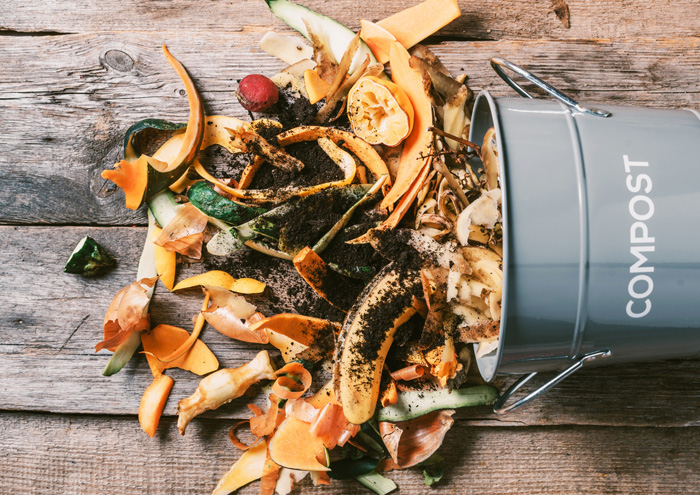

FARMER ORGANISATIONS
You can donate a minimum of 1 kilograms of any type of food waste to any of the following farmer organisations
Kisan Kalyan Foundation

Address: Nearby , CB- 228E, 3rd Floor Metro Station, Ring Rd, Naraina, New Delhi, Delhi 110028
Phone: 070114 47737
National Environment & Rural Development

Address: 201, Plot No. A, Om Apartments, 13, Nanda Block, Mahavir Enclave, New Delhi, Delhi 110045
Phone: 099106 09596